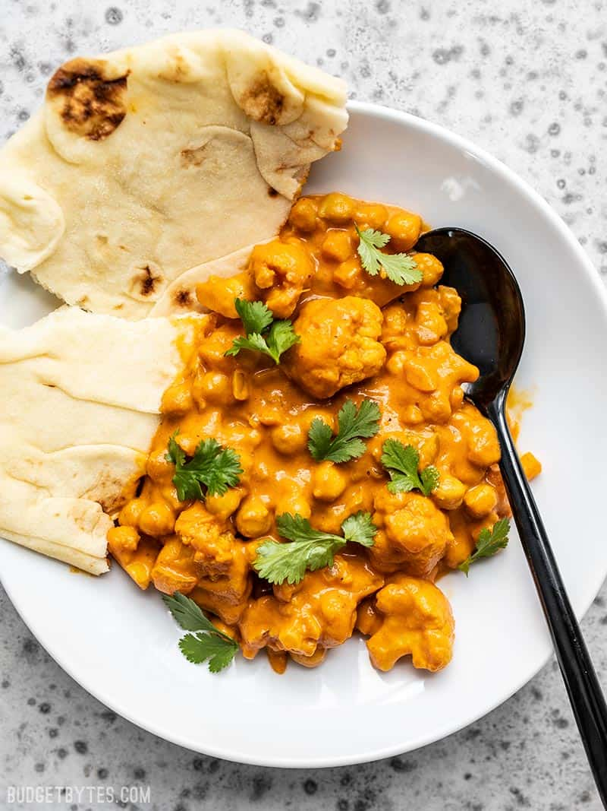

Easy Cauliflower and Chickpea Masala

Description
This super easy, ultra creamy, and heavily spiced Cauliflower and Chickpea Masala will be your new favorite weeknight dinner! So much flavor, so little effort.
Ingredients
Masala Spice Mix
- 2 Tbsp garam masala ($0.60)
- 1/2 tsp cumin ($0.05)
- 1/2 tsp turmeric ($0.05)
- 1/2 tsp smoked paprika ($0.05)
- 1/4 tsp cayenne ($0.02)
- 1/2 tsp salt ($0.02)
- Freshly Cracked Pepper ($0.03)
Skillet Ingredients
- 1 yellow onion ($0.21)
- 3 cloves garlic ($0.24)
- 1/2 Tbsp grated fresh ginger ($0.15)
- 2 Tbsp olive oil ($0.32)
- 12 oz. frozen cauliflower florets ($1.00)
- 1 15oz. can chickpeas, drained ($0.49)
- 1 15oz. can tomato sauce* ($0.59)
- 1/4 cup water ($0.00)
- 1/3 cup heavy cream ($0.26)
- salt to taste ($0.02)
Steps
- In a small bowl, combine the spices for the masala spice mix (garam masala, cumin, turmeric, smoked paprika, cayenne, salt, and pepper).
- Finely dice the onion, mince the garlic, and grate the ginger. Add all three to a large skillet along with the olive oil and sauté over medium heat until the onions are soft and translucent (about 3 minutes). Add the spice mix and continue to sauté for one more minute.
- Add the frozen cauliflower florets to the skillet with the aromatics and spices, and continue to sauté for about 5 minutes more, or until the cauliflower have thawed through and are completely coated in spices.
- Add the drained chickpeas, tomato sauce, and 1/4 cup water to the skillet. Stir to combine, then allow them to simmer over medium-low heat, stirring occasionally, for about 15 minutes. This will help mellow the acidity of the tomato sauce and allow the spices to blend. If the mixture becomes too dry as it simmers, add a couple more tablespoons of water.
- After the sauce has simmered for 15 minutes, turn off the heat and stir in the heavy cream. Give the masala a taste and add salt as needed. Serve in a bowl either over rice or with a piece of bread for dipping.